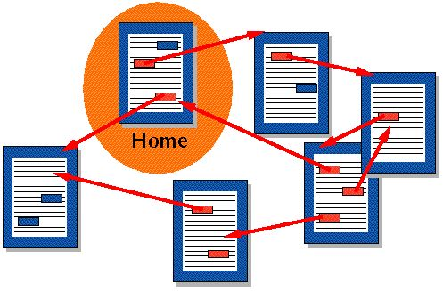

HTML og CSS - hva er det?
Læringsmålene i emneplanen kan deles i to hovedgrupper. Den ene gruppen handler om
"menneske-maskin-integrasjon", altså hvordan vi planlegger, designer og evaluerer et nettsted (blant mye
annet).
Den andre gruppen læringsmål handler om det tekniske - Hvordan lager vi egentlig nettsider? Det er her
forkortelsene HTML og CSS kommer inn. HTML og CSS kan sees som de mest grunnleggende webteknologiene -
det
som definerer hva som vises i nettleseren, og hvordan dette ser ut. I andre emner både nå (grunnleggende
programmering) og senere i studiet lærer dere om hvordan andre språk utvider funksjonaliteten og
kombineres
med HTML og CSS for å lage dynamiske og databasedrevne nettsteder, som dere senere vil kombinere for å
lage
mer avanserte webløsninger.
Her følger en kort forklaring av HTML og CSS. Vi kommer til å gå gjennom det mest grunnleggende i
forelesning, men mesteparten må dere lære ved å bruke boka, W3schools eller nettbaserte tutorials, samt
ved
å jobbe med de obligatoriske oppgavene.
HTML
HTML er en forkortelse for "hypertext markup language", og brukes for å presentere innhold på nettsteder
på
en korrekt måte. Tim Berners-Lee var mannen som først definerte web og
HTML i
1989. I utgangspunktet som en måte å organisere forskningsdata på.
Hypertekst er måten man navigerer på web - altså lenker. For den som har vokst opp med nett og sosiale
medier er dette banalt, lenker har da alltid vært der... Men før HTML var informasjon organisert i flate
strukturer, som tekst i bøker. Der vi i dag klikker en link for å lese mer måtte man før slå opp
referansen
i bokens indeks/referanseliste, dra på biblioteket, og håpe at den aktuelle kilden var tilgjengelig der.
Se
for deg hvordan en tur innom Wikipedia fort tar deg videre til 10-12 andre sider - Hvor lang tid ville
du
brukt på det samme dersom du måtte gå rundt i bokhyller og lete?

Markup viser til struktur, altså det å dele et dokument inn i overskrifter, brødtekst, og seksjoner, samt å utheve ord, sette inn bilder osv. Uten denne strukturen ville alle dokumenter bare vært lange rader med tekst - hvor alt var i samme skrifttype, uten inndeling i avsnitt, overskrifter osv.
HTML brukes altså for å gi innhold struktur, ved å lenke til annet innhold og definere hva som er overskrift og hva som er ren tekst. CSS
CSS står for "Cascading style sheets" og brukes for å angi hvordan innhold skal se ut. CSS-standarden ble definert av nordmannen og Østfoldingen Håkon Wium Lie i 1994.
Der HTML definerer strukturen på et dokument definerer CSS utseendet og plasseringen av elementer.
CSS
CSS skrives som oftest i et eget dokument, som så linkes opp mot HTML-filene som skal styles.
Før CSS ble HTML brukt til å definere både struktur og utseende, noe som gjorde det vanskelig å oppdatere nettsteder, da man måtte inn i hver enkelt HTML-fil for hver eneste lille endring i designet. Poenget med CSS er å skille design og struktur, slik at det blir enklere å lage dynamiske nettsider som er raske å endre og som fungerer godt i alle nettlesere og på ulike skjermer.
Nettstedet CSS Zen GardenLenker til en ekstern side. illustrerer dette på en god måte. Her er det samme HTML-fil, med utallige CSS-filer som definerer utseendet. Legg merke til hvordan ulike stiler endrer inntrykket av siden fullstending.
HTML og CSS er såkalte webstandarder, åpne standarder for publisering på nett. Disse håndteres av World Wide Web consortium, et internasjonalt nettverk som definerer mange av teknologiene vi bruker på nett. Grunnen til at vi bruker w3schools for å lære bort HTML og CSS er altså at dette er opplæring rett fra kilden, fra de som definerer språkene og hvordan disse skal brukes.